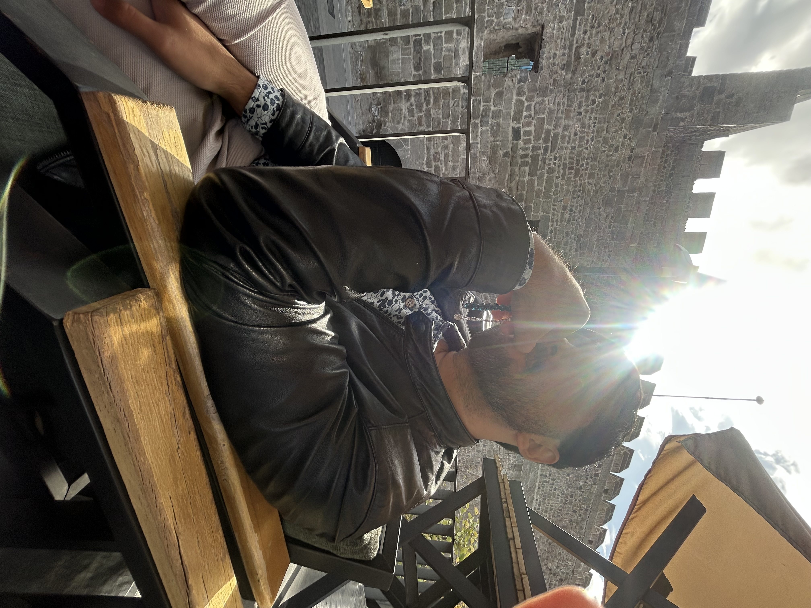
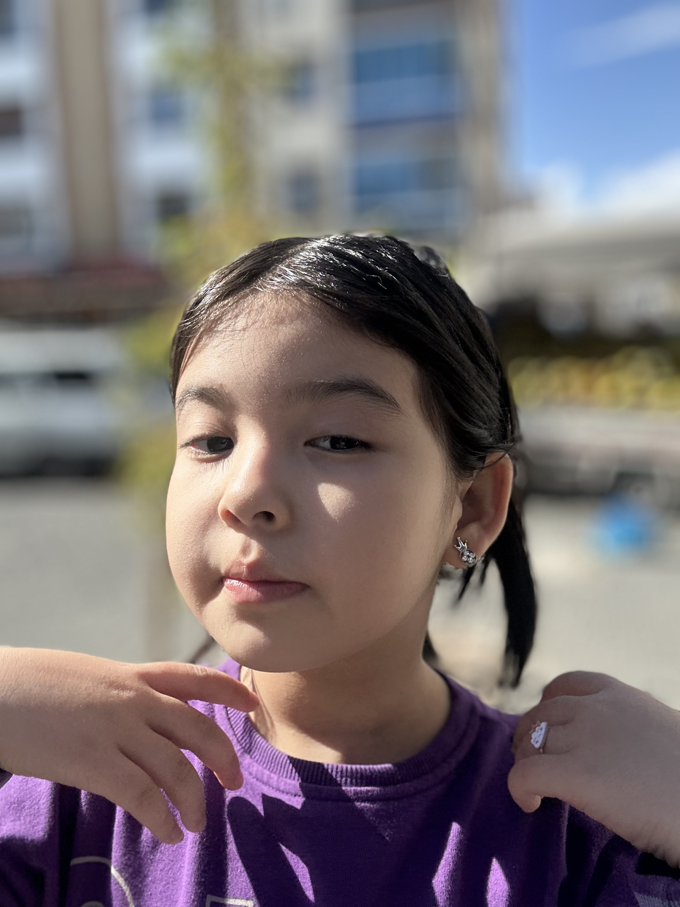
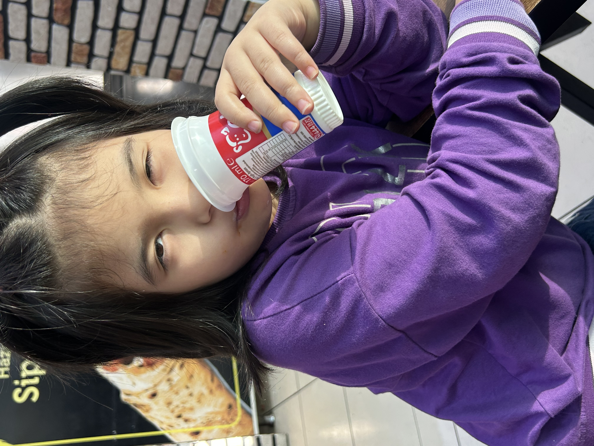
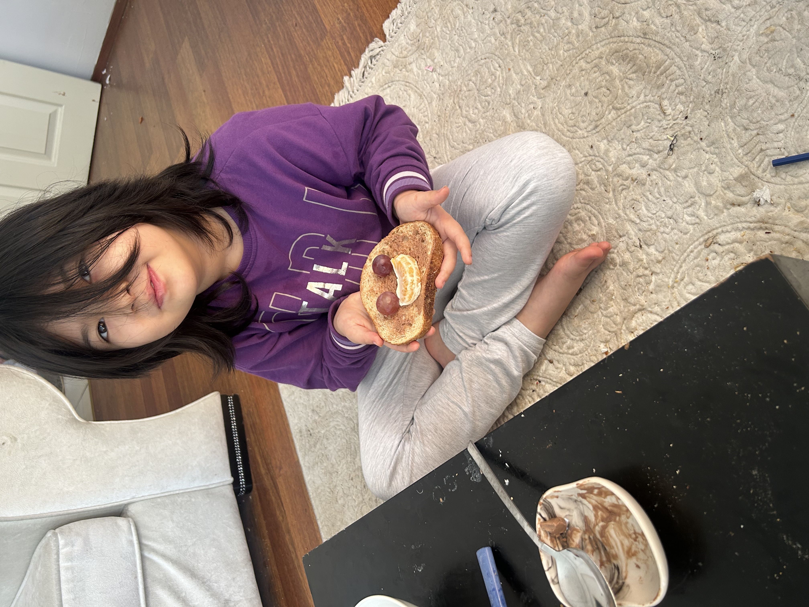
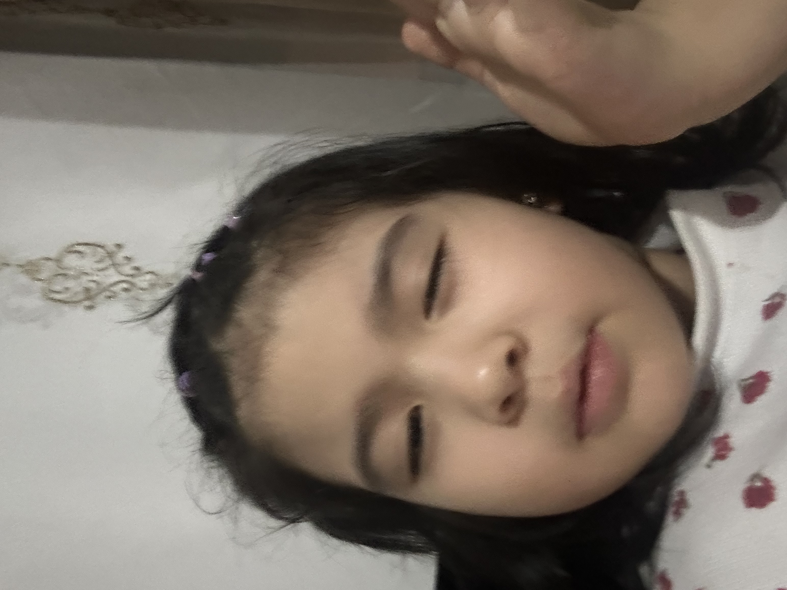
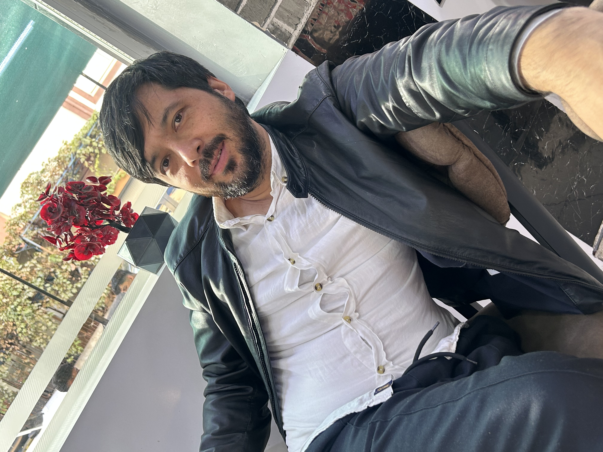
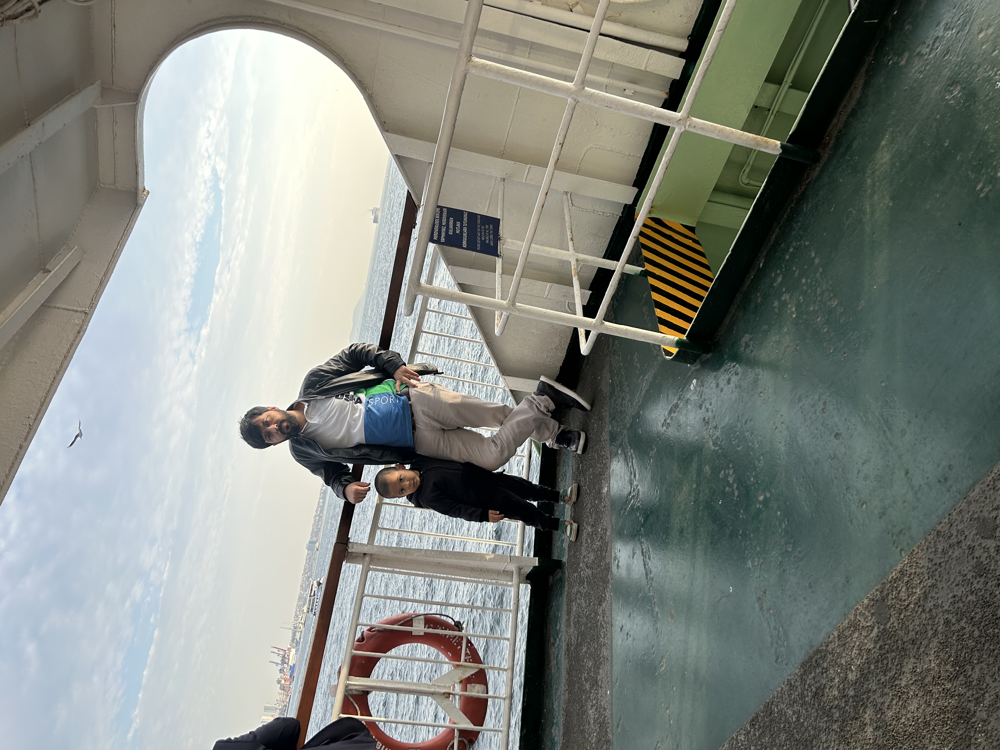
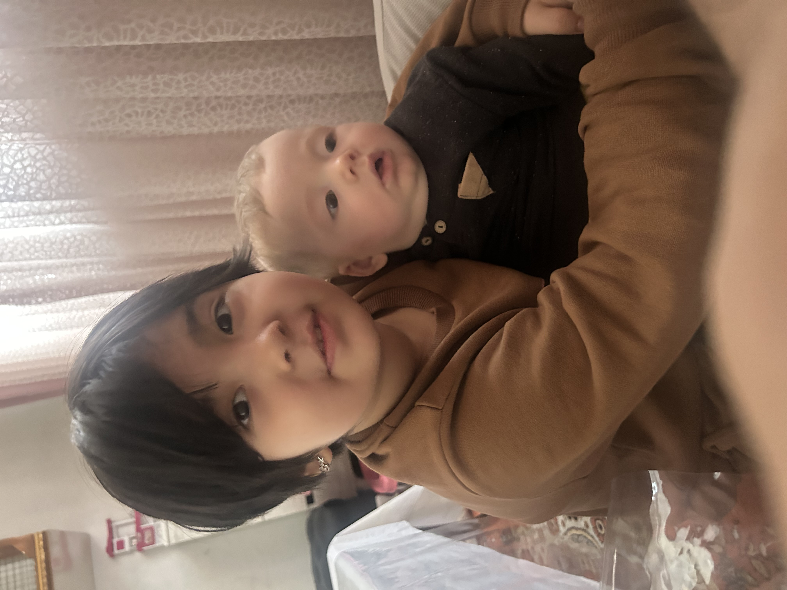
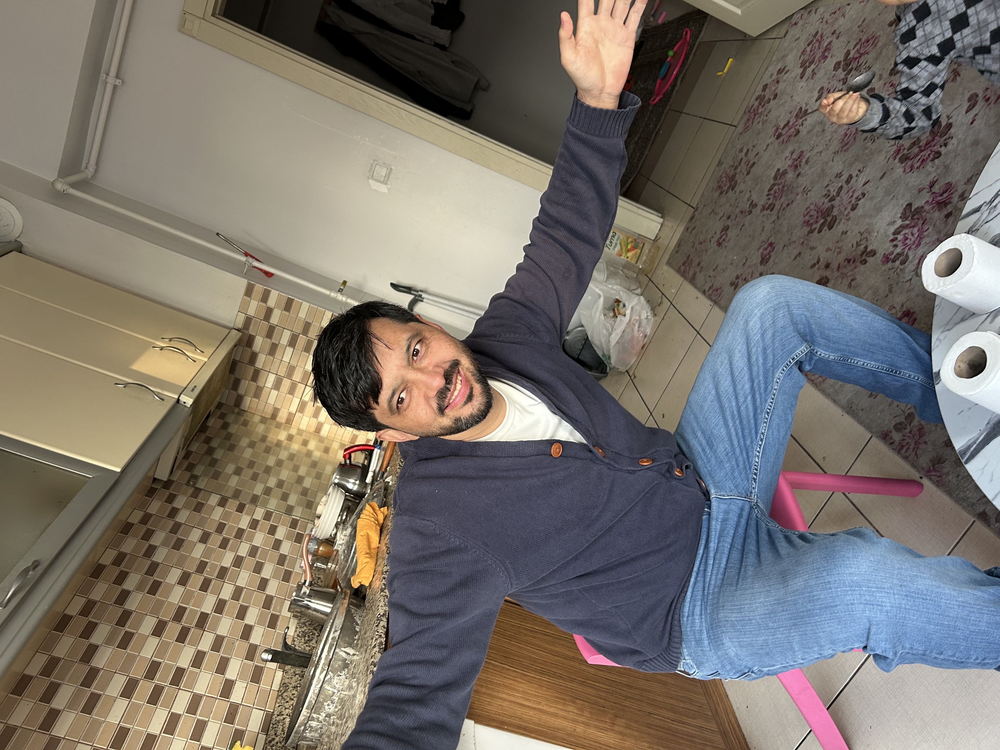
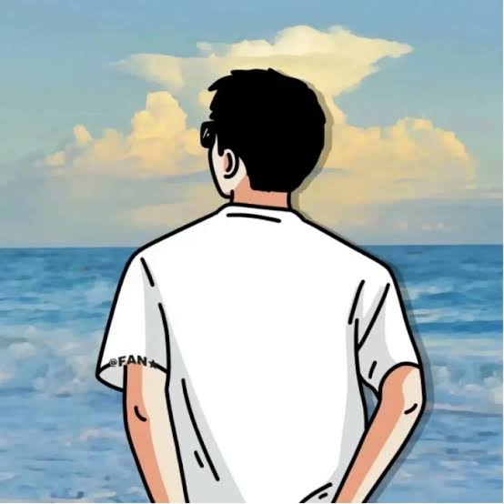

السلام عليكم
ممكن تعطونا
تجربة السفر بالسياره
من اسطنبول الى انطاليا
*🌙 جدول إغتنام عشر ذي الحجة 🌙*
✨ القاعدة الذهبية قبل البدء:
*"إخلاص النيّة لله سبحانه وتعالى في أي عمل تقوم به والمتابعة لرسوله ﷺ"*
(هذا هو الشرط الأساسي لقبول العمل)
*🤲 مفتاح التوفيق:*
*الإلحاح في الدعااااااااء* بأن يعينك الله ويصطفيك للأعمال الصالحة؛ والبعد عن المعاصي *لإن المعصية تحرم التوفيق في الطاعة*
*📋 البرنامج اليومي المقترح:*
*١- الصلاة في أوقاتها في المسجد :* فهي أحب الأعمال إلى الله، مع الحرص على السنن الرواتب وقيام الليل.
*٢- حصن المسلم:* المحافظة على أذكار الصباح والمساء، وأذكار ما بعد الصلاة.
*٣- ورد القرآن الكريم:* اجعل لك نصيباً من (حفظ - مراجعة - تلاوة - وتفسير).
*٤- صلة الرحم:* لا تقتصر على الاتصال، بادر بزيارة الأقارب والأهل وإدخال السرور عليهم.
*٥- التكبير المطلق والمقيد: (الله أكبر، الله أكبر، لا إله إلا الله..) املأ بيتك وطريقك بذكر الله.*
*٦- الصيام:* صيام ما تيسر من هذه الأيام، وبالتأكيد صيام يوم عرفة الذي يكفر سنتين.
*٧- الصدقة الجارية:*
وضع كراتين ماء باردة وشيء من التمر في المساجد.
تجهيز وجبات خفيفة وإعطاؤها للحراس والعمال في حرارة الشمس.
*٨- غذاء العقل والروح:* سماع الدروس والمحاضرات وقراءة الكتب النافعة؛ لتقوية الجانب الإيماني.
*٩- حفظ الجوارح:* صون اللسان عن الغيبة والنميمة، والعين عما حرم الله، لتصفو روحك للعبادة.
*💡 تذكير هام:*
اعلموا رحمكم الله أن هذه الأعمال ليست محصورة فقط في عشر ذي الحجة، بل هي زاد المسلم في سائر أيام السنة، لكننا نخص هذه العشر بمزيد من الاجتهاد لعظم فضلها ومضاعفة الأجر فيها.
*اجعلها بداية انطلاقة جديدة لا تنقطع بانتهاء العشر!*
لم اعبي فل أبدا
اخذت السيارة اربعة ايام
والسائق يعبي و انفجع بالسعر وما ابلغني إلا بعد التعبئة
اول مره عبى ٨٠٠ ليرة
ثاني تعبئة ١٥٠٠ ليرة
ثالث تعبئة ٥٠٠ ليرة
رابع تعبئة ٦٠٠ ليرة
جميع مشاورينا في اسطنبول ومشوار واحد فقط من الفاتح إلى مطار صبيحة
والباقي مشاوير داخل اسطنبول إلى رحلتي من مطار اسطنبول
مجموع مصروف الديزل اربعة ايام
٣٢٠٠ ليرة = ٢٦٤.٢٦ ريال
وإيجار السيارة مع رسوم الطرق ٨٦٠ ريال
الميزة كنت مرتاح جدا امشي بسيارة تحت يدي و اروح بسهوله لاي مكان ارغبه



. new one

new one
. frf fdsa fsda
new one
. guzal
. guzal

guzal

guzal
guzel


guzel

guzle


guzel